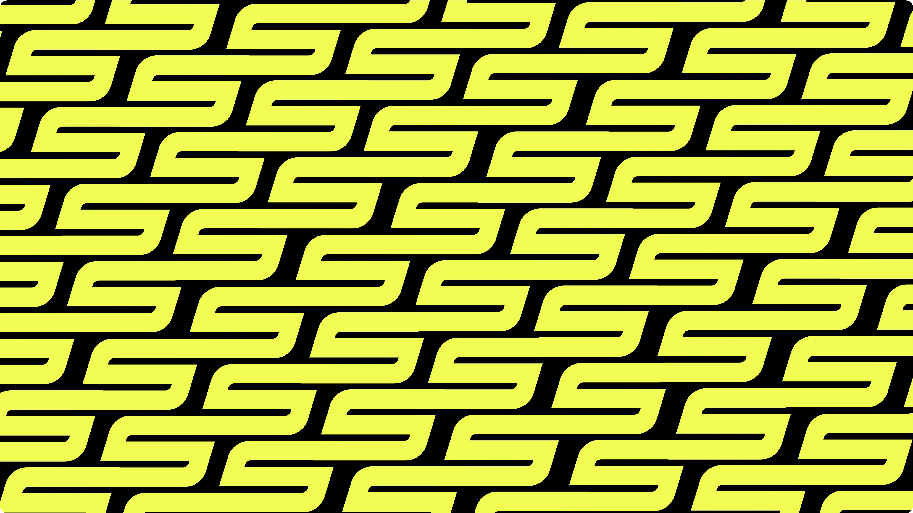

SPOT — это уникальная платформа и комьюнити, объединяющее райдеров всех уровней: от новичков до профессионалов. Мы вдохновляем на развитие в уличном спорте, помогая осваивать новые трюки, находить лучшие места для катания и делиться опытом с единомышленниками.
Помочь райдерам раскрывать свой потенциал и прийти к лучшей версии себя.
Мы говорим просто и понятно, как старший брат, который всегда рядом, чтобы поддержать и вдохновить. Наш тон дружелюбный, динамичный и немного дерзкий, чтобы соответствовать духу уличного спорта.
Энергичный. Уверенный.
Открытый. Смелый.
Свободный. Творческий.
Целеустремленный.
Логотип медиа-сервиса SPOT выполнен с использованием жирного шрифта и динамичных форм, которые отражают силу, уверенность и энергичный характер бренда. Наклон букв символизирует движение и стремление вперед. Логотип не только визуально привлекателен, но и отражает ценности бренда. Он передает ощущение динамики, свободы и стремления к новым высотам, что делает его идеальным символом для медиа-сервиса, который поддерживает, обучает и вдохновляет.
Нейминг «SPOT» символизирует место для катания, где райдеры выполняют трюки. Медиа создаёт некий спот, который создает пространство для развития, общения и обмена опытом, объединяя всех, кто увлечен уличным спортом и культурой.

Наш логотип может быть выполнен в жёлтом, чёрном и белых цветах. Выбирайте цвет логотипа для достижения максимальной контрастности и четкости. Если у вас темный фон, используйте жёлтый или белый цвет лого. Если у вас светлый фон, вам следует использовать чёрный логотип. При наложении на фото убедитесь, что логотип четкий и разборчивый. Никогда не используйте логотип в других или второстепенных цветах.
Чтобы наш логотип выглядел хорошо в любом месте, ему нужно охранное поле. У нас оно равно высоте знака.

Знаком логотипа SPOT является буква «S», которая символизирует движение, гибкость и динамичность — ключевые элементы уличного спорта. Изогнутая форма буквы отражает непрерывное движение и стремление к новым вершинам, как уличный спорт, где каждый момент — это шаг к улучшению, новым трюкам и приключениям.


Чтобы наш логотип выглядел хорошо в любом месте, ему нужно охранное поле. У нас оно равно высоте знака.

1-2. Запрещается изменять пропорции логотипа.
3. Запрещается
изменять угол наклона логотипа.
4. Запрещается использовать
другой цвет, кроме корпоративного.
5. Запрещается применение
дополнительных эффектов.
6. Запрещается менять непрозрачность
логотипа.
7. Запрещается применять градиент.
8.
Запрещается использовать обводку.
Преобладающим цветом является желтый. Он будет использоваться в качестве основного цвета и базовый цвет во всех его сочетаниях. Другие цвета, которые дополнят фирменный стиль будет черный, светло-серый и белый.
Y
HEX: F1FD53
RGB: 241, 253, 83
CMYK: 5%, 0%, 67%, 1%
B
HEX: 0D0D0D
RGB: 13, 13, 13
CMYK: 0%, 0%, 0%, 95%
G
HEX: F3F4F5
RGB: 243, 244, 245
CMYK: 1%, 0%, 0%, 4%
W
HEX: FFFFFF
RGB: 255, 255, 255
CMYK: 0%, 0%, 0%, 0%
Для визуального стиля медиа-сервиса SPOT выбран шрифт Benzin, который идеально отражает характер бренда. Benzin используется для заголовков, подзаголовков и ключевых элементов дизайна. Его жирные, мощные и динамичные формы подчеркивают энергию, силу и современность бренда, визуально поддерживая ассоциации с активным образом жизни и уличной культурой.
AaБбВв
Живи. Рискуй.
Превосходи себя!
абвгдеёжзийклмнопрстуфхцчшщъыьэюя
АБВГДЕЁЖЗИЙКЛМНОПРСТУФХЦЧШЩЪЫЬЭЮЯ
1234567890!@#$%^&*
В брендбуке SPOT в качестве второстепенного шрифта выбран Evolventa. Этот шрифт идеально дополняет динамику и мощь заголовочного шрифта Benzin, добавляя визуального баланса и удобочитаемости текстам. Использование Evolventa помогает создавать чистый, профессиональный образ бренда, поддерживая его энергичный и целеустремленный характер.
AaБбВвГг
Живи. Рискуй.
Превосходи себя!
абвгдеёжзийклмнопрстуф
хцчшщъыьэюя
АБВГДЕЁЖЗИЙКЛМНОПРСТ
УФХЦЧШЩЪЫЬЭЮЯ
1234567890!@#$%^&*
абвгдеёжзийклмнопрстуф
хцчшщъыьэюя
АБВГДЕЁЖЗИЙКЛМНОПРСТ br УФХЦЧШЩЪЫЬЭЮЯ
1234567890!@#$%^&*
В медиа-сервисе SPOT используется 12-колоночная модульная сетка для обеспечения визуальной структуры и единого стиля. Она универсальна, адаптивна и поддерживает гармоничное размещение элементов на любых устройствах. Сетка позволяет гибко дробить контент, создавая удобные и эстетичные интерфейсы
Чтобы наш логотип выглядел хорошо в любом месте, ему нужно охранное поле. У нас оно равно высоте знака.